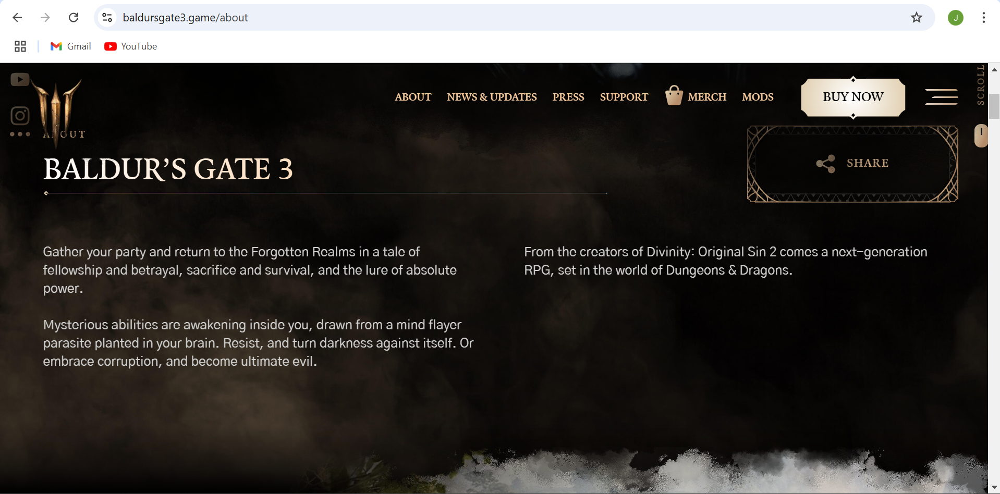

Hello reader. In this article, I will be analyzing BaldursGate3.game, the official website for the award winning Baldurs Gate 3 video game.
Who is the site's target audience?
The site's target audience are video gamers though this demographic can extend to pretty much anyone. Tabletop players (Dungeons & Dragons Fans) and RPG game enthusiasts often come to mind.
How is the site organized?
The site is organized from a top to bottom format, having a navigation bar on the uppermost part of the browser of which it follows the user as they scroll up or down.
Each link on the navigation bar takes the user to a different page of the site, with content varying between selectable image boxes, articles, and other interchangeable text content depending on what the user chooses.
Which CRAP Design Principle does the use?
The website utilizes the element of contrast, making certain content and text stand out such as images that aim to promote gameplay with its bright, colorful display in contrast to that of the background's dark and static color. The text and outline of borders also highlight this by utilizing a golden bright color.
What is the Audit Score according to the Accessibility Checker?
According to the Accessibility Checker, the website receives a score of 46.
What is the site's effectiveness? Does it support users in completing actions accurately?
The site aims to promote its company's video game, Baldurs Gate 3, as well as serving as a central hub for content surrounding the game from social media and technical support.
The website does a fair job in effectively handling its primary purpose albeit lacking some accessiblity elements that hinder its ease of navigation.
What is the site's efficiency? Can users perform tasks quickly?
The website's efficiency is good as it does not take more than 3 seconds to load on a majority of devices. Tasks such as navigating in between pages and loading images are quick with its content appropriately dipslayed.
How is the engagement? Is it pleasant to use and appropriate for its industry/topic? Make at least one recommendation to improve this website based on what you learned in this module.
The website does a good job in promoting engagement, leaving many opportunities for communication with links to resources be it technical support or social media. Being a central hub for the game, the website helps direct those interested to a plethora of content within and outside the game.
Coming from personal experience, the site is easy to navigate through, though some elements like the site's contrast in particular, can be a bit difficult to read at times. My suggestion would be to add a different color behind text in order to help the reader to have an easier time adjusting.